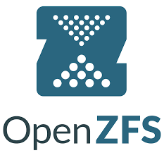

About Me
Hi, I’m Tyler George. I’m passionate about IT, cybersecurity, and building hands-on experience in real-world infrastructure. I enjoy self-hosting, automating workflows, and exploring new technologies in my homelab.
Experience & Skills
- Building and managing homelabs with Proxmox, LXC, Docker, and ZFS
- Securing networks and cloud environments
- Automating workflows and deploying applications
- Hands-on experience with Linux servers (Ubuntu, Debian, CentOS)
- Version control and collaboration with Git / GitHub
- Scripting and automation using Bash & Python
Tools & Technologies
 Linux
Linux
 Proxmox / LXC
Proxmox / LXC
 Docker
Docker
 Cloudflare
Cloudflare
 GitHub
GitHub
 Python
Python

ZFS
Certifications & Learning
- CompTIA Security+ (In Progress / Optional)
- CompTIA Network+ (In Progress / Optional)
- CompTIA A+ (In Progress / Optional)
- CompTIA PenTest+ (In Progress / Optional)
- Microsoft Azure Fundamentals (In Progress / Optional)
- RHCSA (In Progress / Optional)
- OSCP (In Progress / Optional)
- CCNA (In Progress / Optional)
- Ongoing hands-on cybersecurity labs
- Continuous learning of new IT tools and technologies
My Approach
I enjoy experimenting with new tools and automating repetitive tasks to make systems more efficient. I believe in learning by doing, which is why my homelab is a sandbox for testing, deploying, and securing services.